MAHATMA JYOTHIBA PHULE
TELANGANA BACKWARD CLASSES
WELFARE RESIDENTIAL
DEGREE COLLEGE FOR WOMEN
Medchal & Hyderabad
💻 Department Code: CSE-01
Department of Computer Science
About the Department
The Department of Computer Science is dedicated to providing high-quality education in computing and modern technologies. It focuses on building strong foundations in programming, software development, data structures, and data management.The department encourages innovation, research, and practical learning through well-equipped laboratories and experienced faculty. Students are trained to develop problem-solving skills and logical thinking, which are essential in today’s technology-driven world.
With a curriculum designed to meet industry standards, the department prepares students for successful careers in fields such as software development, data science, artificial intelligence, and information technology. It also promotes continuous learning and professional growth to help students adapt to the rapidly evolving IT industry.The department also emphasizes holistic development by encouraging students to participate in seminars, workshops, technical events, and project-based learning. It fosters a collaborative environment where students can explore emerging technologies such as cloud computing, cybersecurity, and machine learning. Through continuous guidance and mentorship, the department aims to nurture creativity, teamwork, and leadership skills, enabling students to excel both academically and professionally.
Programs Offered
B.Sc (MSCs)
B.Sc (Data Science)
B.Sc (AIML)
B.Sc (MPCs)
P. V. Nagalakshmi is an experienced IT Professional and Educator with over 17 years of experience in Information Technology. She is a Sun certified Java programmer(SCJP) who achieved a high score in the certification, demonstrating strong expertise in Java programming and Object oriented concepts. Through out her career, she has been involved in software development, programming training and academic mentoring,specializing in core Java, advanced Java technologies and software development methodologies. She is known for her clear teaching style, practical demonstrations and ability to simplify complex programming concepts. As a guest lecturer, she has shared valuable insights on Java programming, industry expectations and career opportunities in the software field. Through her dedication to teaching and profssional excellence, P.V.Nagalakshmi continues to guide an inspire students to build strong programming skills and pursue successful careers in the IT industry.She had published more than 8 papers in National and International Journals and presented papers in National and International conferences.
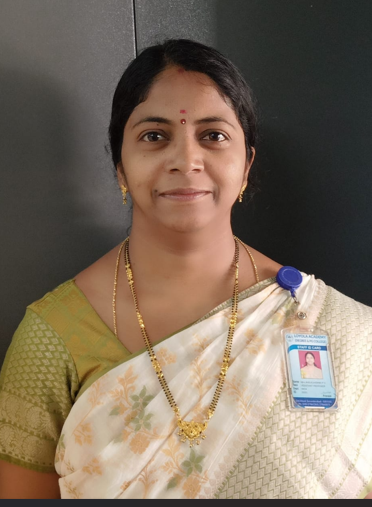
P. V. Nagalakshmi
MCA, MTech
Sana Siddiqua is a Degree Lecturer - Regular - in Department of Computer Science. She secured the 7th position at the university level in her Bachelor of Engineering degree from Osmania University in 2013 and recieved Silver medal for the same. Following this, she worked as a Java Software Developer at EPAM India Pvt. Ltd., where she gained practical experience in software development, programming, and application design in Big data analytics technologies. She then served as a Project Scientist at the National Remote Sensing Centre, contributing to research and development in geospatial technologies. During this tenure, she played a key role in developing the Government web portal “Yuktdhara” for Geo-MGNREGA, which is now used nationwide for planning and monitoring rural development projects. She have consistently combined engineering expertise with practical applications to contribute to nationally important initiatives. She has also received job offers from MNCS such as Wipro, Accenture, and Cyient. Overall, her academic achievements and professional experience highlight her capability to drive meaningful technological and societal impact.
Sana Siddiqua
B.E(I.T)(O.U), M.TECH(C.S.E)JNTUH, TS.NET
Vuppala Vara Laxmi is a Degree Lecturer in Computer Science. She holds an M.Tech in Computer science from University College of Engineering, Osmania University. She qualified the UGC–NET examination in Computer Science in 2020 and the GATE examination in Computer Science in 2017, and secured the State 16th Rank in the TS-PGECET examination in 2018 in Computer Science. She began her professional career as a Software Engineer with Infosys pvt Ltd, where she completed three months of training as a Software Analyst at the Infosys Global Education centre, Mysuru campus(Feb,2016 to June,2016) duriong which she was trained in several technical subjects including python. NET, OOPS,DataStructures, RDBMS(SQL). She later worked as a Software Engineer at Hexagon Capability Center India from 2016 to 2018, where she actively contributed to software development and product enhancement activities. During her tenure, she received the Star Award for showing her expertise in successfully upgrading a software product which was built in C++ to C#. NET in EUCW Team in HCCI. Her areas of Interest include Artificial Intelligence and Machine Learning. With a strong blend of Industry Experience and academic achievements , she is committed to guiding students in building strong foundations in computer science.
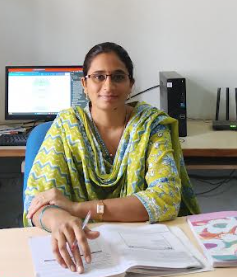
Vuppala Vara Laxmi
MTech(C.S.E) from O.U, B.E(C.S.E),
(JNTUH),UGC-NET,GATE qualified
Sana Firdous is a faculty in the Department of Computer Science. She completed her M.Tech in 2015 with First Class Distinction. She has published a research paper titled “Preserving Location Privacy in Geo-Social Applications” and brings with her 2 years of teaching experience. Currently, she is serving as a Guest Lecturer in Computer Science and Engineering at MJPTBCWRDC. Her passion lies in teaching, research, and knowledge sharing, and she continues to inspire students through her dedication to academic excellence and innovation.
Sana Firdous
M.Sc(DataScience)
B.Divya Jyothi is a faculty in the Department of Data Science. Her research paper titled “Liver Cancer Classification” was successfully published in the International Research Journal of Engineering and Technology (IRJET), a reputable peer-reviewed journal that publishes innovative research in engineering and technology fields. The methodology includes data preprocessing, feature extraction, and classification techniques to improve diagnostic accuracy. The results demonstrate the potential of intelligent systems in supporting medical diagnosis and reducing human error. The publication of this work in IRJET reflects its academic relevance and contribution to the field of medical data analysis. Overall, the paper provides valuable insights into the application of computational methods for liver cancer detection and classification.
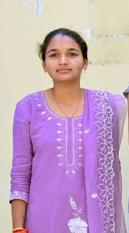
B.Divya Jyothi
M.Sc(DataScience)
📐 Department Code: MATH-01
Department of Mathematics
About the Department
The Department of Mathematics is dedicated to developing strong analytical thinking and problem-solving skills among students. It provides a solid foundation in both pure and applied mathematics, covering key areas such as algebra, calculus, statistics, and mathematical modeling. The department focuses on conceptual understanding and logical reasoning, which are essential for various scientific and technological fields. With experienced faculty and a supportive learning environment, students are encouraged to explore mathematical concepts deeply and apply them to real-world situations.
In addition to academic excellence, the department promotes critical thinking, research aptitude, and precision in problem-solving. It prepares students for higher education and diverse career opportunities in fields such as education, data analysis, finance, and research.
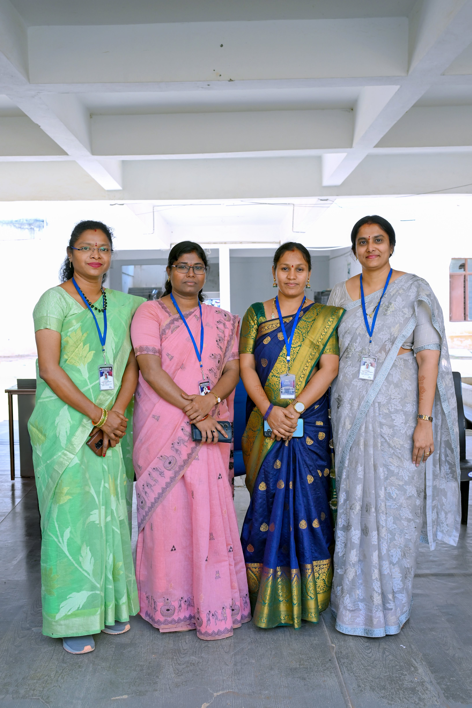
Programs Offered
B.Sc (MSCs)
B.Sc (Data Science)
B.Sc (AIML)
B.Sc (MPC)
B.Sc (MPCs)
G. Prathibhais a Degree lecturer in the Department of Mathematics. She highly experienced and dedicated educator with over two decades of teaching experience, reflecting her long-standing commitment to academic excellence and the holistic development of students. She graduated as a topper in her degree, demonstrating a strong academic foundation, discipline, and mastery of her subject. Over the course of her career, she designed and delivered comprehensive curricula tailored to students learning needs. Her experience has enabled her to guide students in research, critical thinking, and professional development. She ensure that students are well-prepared for higher education and future careers. Overall, her career reflects a dedication to education, student development, and the reputation of the institution she serve.
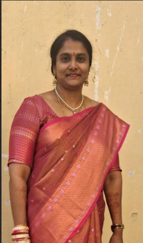
G. Prathibha
M.Sc(Mathematics), TG-SET
P. Lavanya is currently serving as a Degree Lecturer in Mathematics at MJPTBCWR Degree College for Women, Medchal. She holds Master’s degrees in Mathematics and Statistics and has qualified the State Eligibility Test (SET). She has over 9 years of teaching experience in reputed institutions, including St. Francis College for Women, Begumpet. She has taught both undergraduate and postgraduate Mathematics courses, guiding students in developing strong analytical and problem-solving skills. She is a Gold Medalist from Osmania University for securing the highest marks in M.Sc. Mathematics. She actively participates in webinars and seminars to enhance her teaching and stay updated with developments in mathematics education.
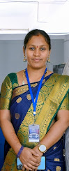
P. Lavanya
M.Sc(mathematics)
Manjula is a Degree Lecturer in the Department of Mathematics at MJPTBCWR Degree College for Women, Hyderabad. She holds an M.Sc. in Mathematics from Osmania University and has qualified the TS-SET examination. She has more than 15 years of teaching experience in higher education institutions. She previously worked at Sri Indu College of Engineering and TKR College of Engineering, teaching Engineering Mathematics. She also holds a patent related to structural and fluid dynamics. She has successfully completed several NPTEL certification courses to enhance her teaching and subject knowledge. Her dedication to teaching earned her the Best Faculty Award. She has also received multiple Gold Medals for her academic excellence during her studies.
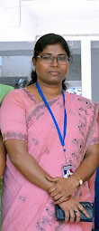
Manjula
M.Sc.(Mathematics), TS-SET
K. Dhana lakshmi is a Degree lecturer in the Department of Mathematics. She had served in various responsible Government and institutional positions. She worked as a Post Graduate Teacher (PGT) in the Social Welfare Department. She was also appointed as Junior Lecturer (JL) in the Mahatma Jyotiba Phule Telangana Backward Classes Welfare Department (MJPTBC Welfare), playing an active role in higher secondary education and academic mentoring. In addition, she served as a Junior Assistant in the Southern Power Distribution Company of Telangana. Further, she worked as a Junior Assistant in the District Court (Jilla Court), where she was involved in official documentation, clerical responsibilities, and court administration. These diverse roles reflect her ability to adapt to different professional environments, her experience in both academic and administrative sectors, and her commitment to serving in public institutions with efficiency, responsibility, and dedication.
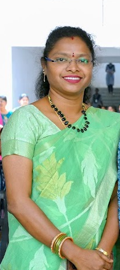
K. Dhana Laxmi
M.Sc(Mathematics), B.Ed
📊 Department Code: STAT-01
Department of Statistics
About the Department
The Department of Statistics focuses on the study of data analysis, probability, and statistical methods used for effective decision-making. It provides students with strong quantitative and analytical skills through a combination of theoretical knowledge and practical applications. The department emphasizes the use of modern statistical tools and techniques to interpret real-world data. Students are trained in areas such as data collection, analysis, interpretation, and visualization, which are essential in today’s data-driven world.
The department aims to build a strong foundation for students who wish to pursue higher studies or careers in emerging fields such as data science, business analytics, artificial intelligence, and market research. Through continuous guidance and mentorship, students are prepared to meet industry demands and excel in competitive environments. With experienced faculty and a supportive academic environment, the department encourages critical thinking, research, and problem-solving abilities. It prepares students for careers in data analysis, research, finance, healthcare, and various industries where data plays a crucial role.
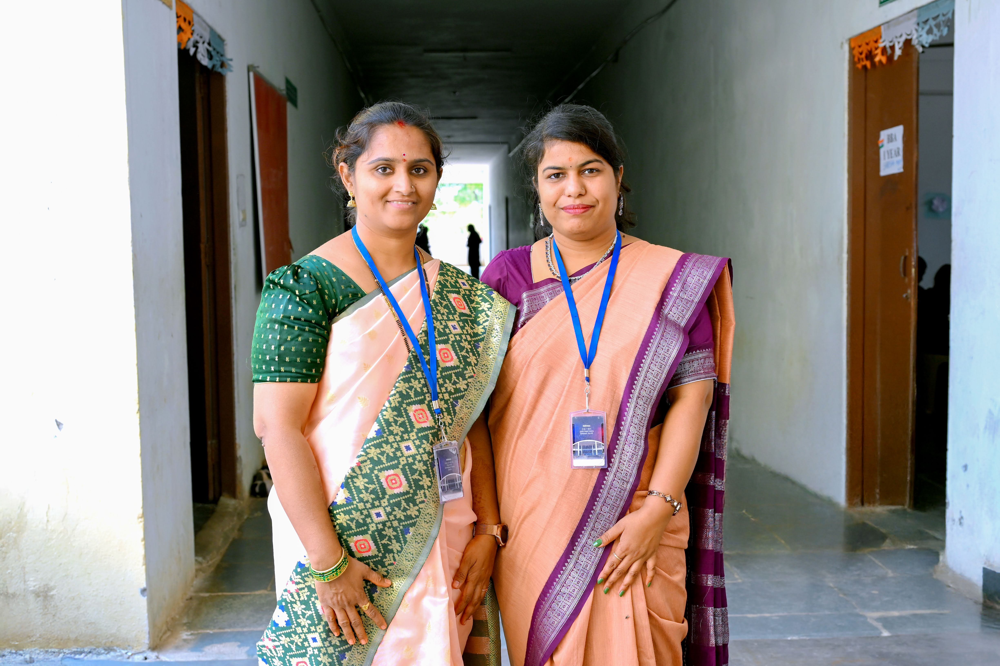
Programs Offered
B.Sc (MSCs)
B.Sc (Data Science)
B.Sc (AIML)
Our Faculty
Dr. T. Deepthi is a faculty in the Department of Statistics. She have been awarded both the Junior Research Fellowship (JRF) and Senior Research Fellowship (SRF) for pursuing her Ph.D. With 17 years of teaching experience, she have contributed significantly to higher education through effective instruction and academic mentoring. She have served as Joint Secretary of the Society for Development of Statistics (SDS) and have published more than 13 research articles in reputed national and international journals. She also worked as a Project Fellow from June 2013 to September 2014 under a Major Research Project funded by the University Grants Commission (UGC), participated in 11 national and international conferences, and served on examination panels, demonstrating her active involvement in teaching, research, and academic service.
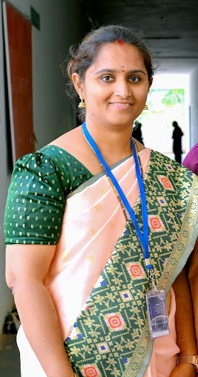
Dr. T. Deepthi
Ph.D(Statistics)
Dr. Ranjitha Chul is a Degree Lecturer in the Department of Statistics. She was dedicated academic professional with 9 years of teaching experience at the degree level, committed to excellence in both education and research. She have been awarded a Ph.D., complemented by an M.Sc. in Statistics, where she was honored with a gold medal for outstanding academic performance. She have successfully cleared TS-SET and UGC-NET, and she was a proud recipient of the INSPIRE Scholarship, recognizing her research potential. Her research contributions include two international publications, with one indexed in Scopus, reflecting her active engagement in the global scientific community. She have attended eight international and national conferences to present her work and stay updated with emerging trends in her field. Additionally,She actively organize various conferences and workshops, contributing to academic discourse and professional development. Life member of “Indian Society for Probability and Statistics”. Life member of “Society for Development of Statistics”.
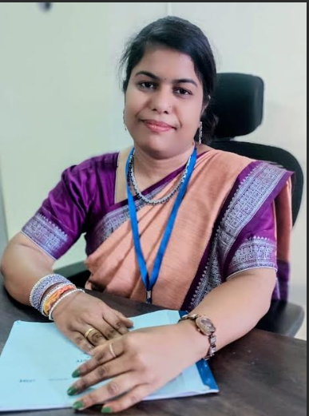
Dr. Ranjitha Chul
Ph.D(Statistics), TS-SET, UGC-NET
💡 Department Code: PHY-01
Department of Physics
About the Department
The Department of Physics provides foundation in theoretical and applied physics.
Encourages research and practical learning.
Programs Offered
B.Sc (MPC)
B.Sc (MPCs)
M.Ravali is a faculty in the Department of Physics. Her specialization in Electronics and Instrumentation from University college of science, Osmania University. Worked as Junior Lecturer in Megha Junior College, ECIL(2021-2022).She possess 5 years of teaching experience as a Degree Lecturer in Physics at the undergraduate level. Worked as Degree Lecturer in Omega degree college, ECIL(2022-2023). During her teaching career, she have been actively involved in delivering comprehensive lectures in core physics subjects and specialized topics related to electronics and instrumentation through her experience.
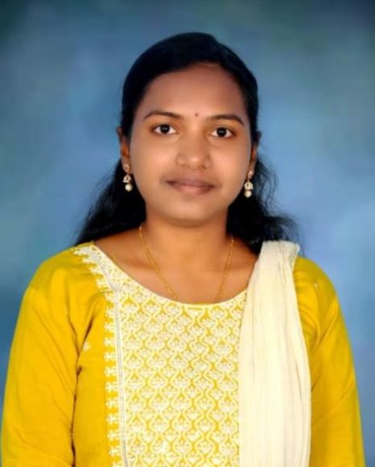
M.Ravali
M.Sc(Physics), B.Ed
🧪 Department Code: CHE-01
Department of Chemistry
About the Department
The Department of Chemistry focuses on organic, inorganic and physical chemistry.
Encourages research and lab experience.
Programs Offered
B.Sc (MPC)
B.Sc (ANPHBC)
B.Sc (MBZC)
B.Sc (NZC)
N.Baby is a Degree Lecturer in the Department of Chemistry. She successfully qualified the CSIR–UGC-NET examination. In addition to this prestigious qualification, She secured the State 1st Rank in the TREIRB Gurukula Examination (Girls category) conducted by the Telangana Residential Educational Institutions Recruitment Board. She have 11 years of Teaching Experience. These achievements reflect her consistent dedication to rigorous study, her ability to excel in highly competitive examinations, and her commitment to academic and professional growth. Together, they signify not only personal accomplishment but also her readiness to contribute effectively to higher education and research through strong subject mastery, disciplined preparation, and sustained pursuit of excellence.
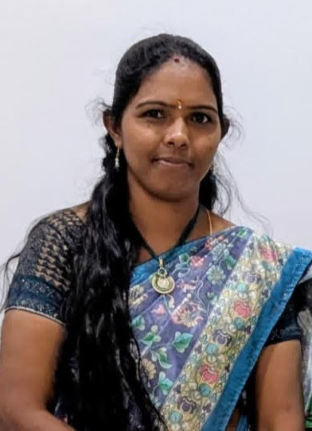
N.Baby
M.Sc(Chemistry), B.Ed(phd Pursuing)
P. Annapurna is a Degree Lecturer in the Department of Chemistry. She is currently working as a degree lecturer in the Department of Chemistry at MJPTBCWRDC(W). She completed her M.Sc. in Chemistry in 2013 from University College of Science, Osmania University and her B.Ed in 2014 from Palamur University. She has qualified the State Eligibility Test and possesses 9 years of teaching experience. Her professional journey includes working as a contract school assistant teacher for 1 year (2017–2018) at Ashram School, Kotha Pally, Mahabubnagar, as a trained graduate teacher for 1 year (2018–2019) at Social Welfare Residential School, Marikal, and as a junior lecturer in Chemistry for 5 years (2019–2024) at MJPTBCWRJC. Since 2024, she has been serving as a degree lecturer at MJPTBCWRDC (W). She is skilled in mentoring, lab management, and innovative, collaborative teaching practices.
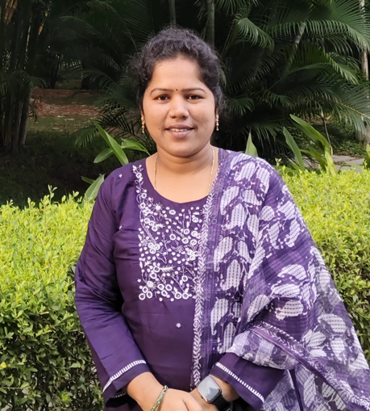
Annapurna
M.Sc(Chemistry)
K. Shirisha is a faculty in the Department of Chemistry. She completed her M.Sc. in Chemistry with a specialization in Organic Chemistry from Palamuru University. She joined MJPTBCWRDC as a faculty member 4 months ago. She is deeply passionate about teaching and is committed to fostering students academic development in Chemistry. Through her dedication, she aims to enhance students’ understanding of the subject and contribute positively to their educational growth.